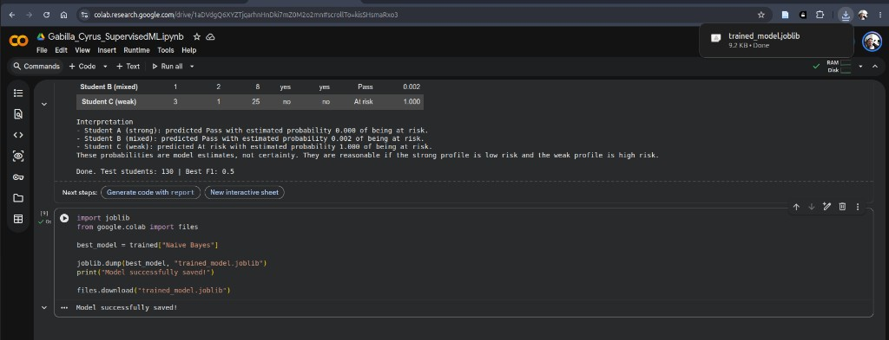
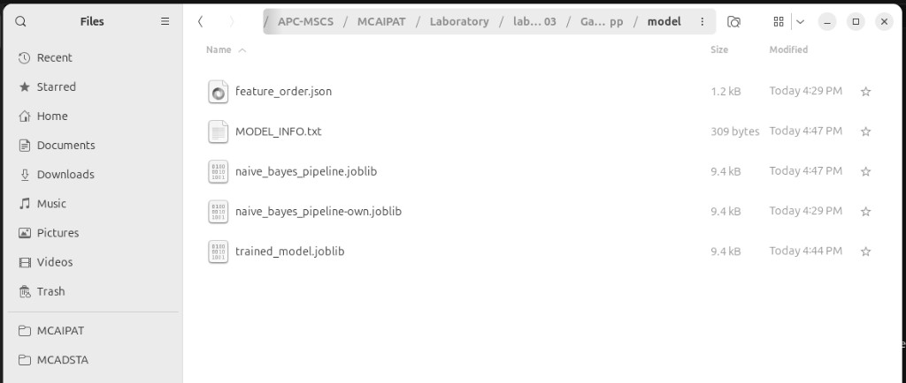
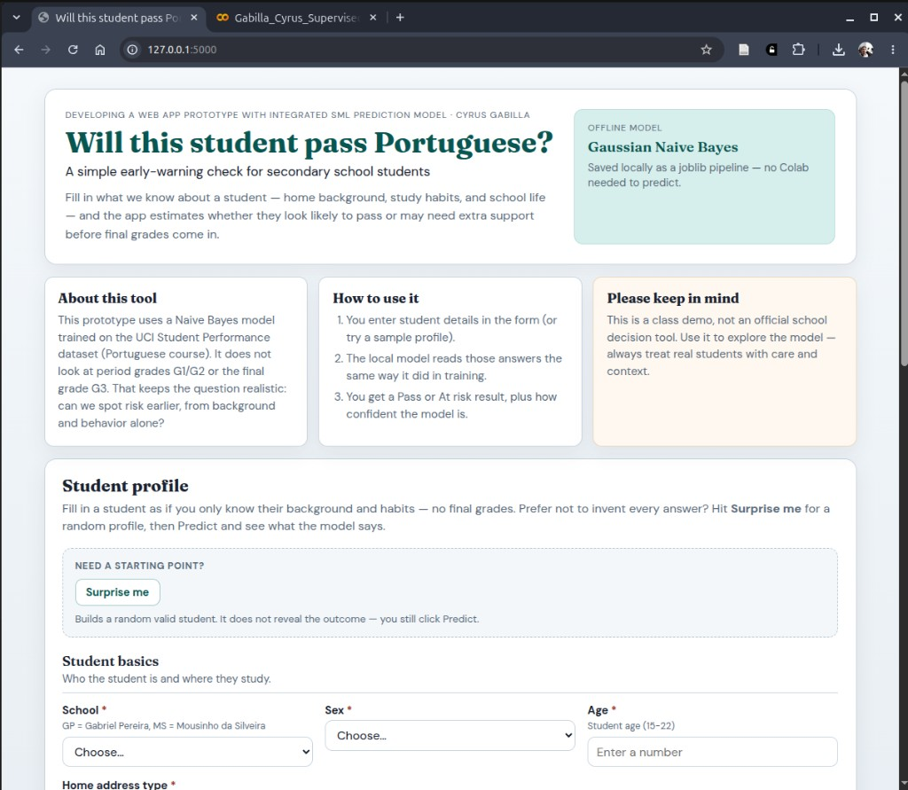
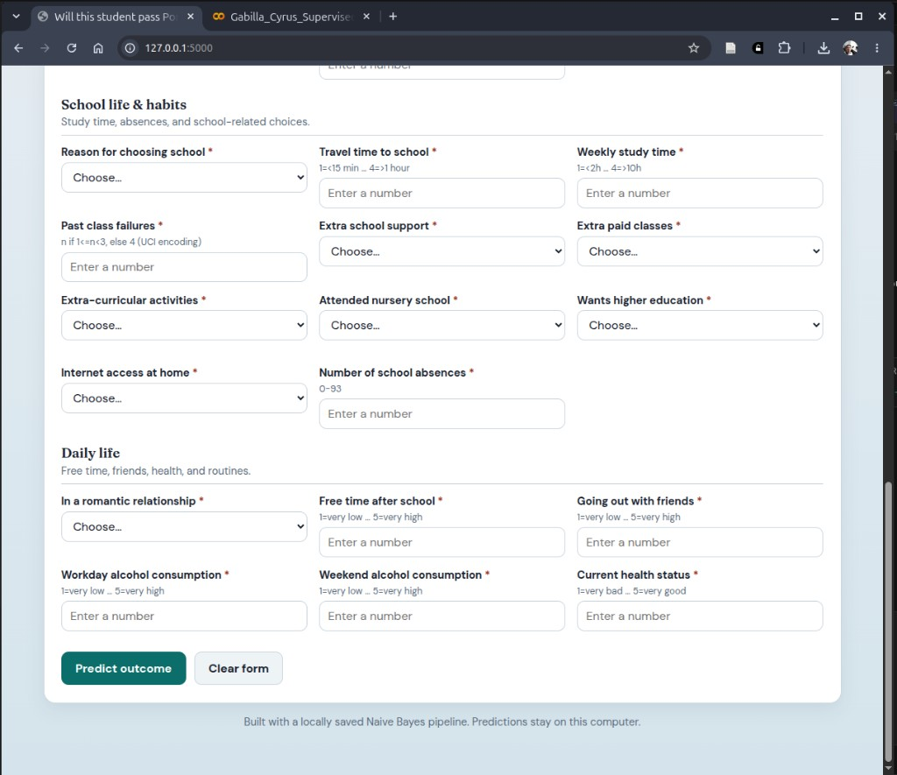
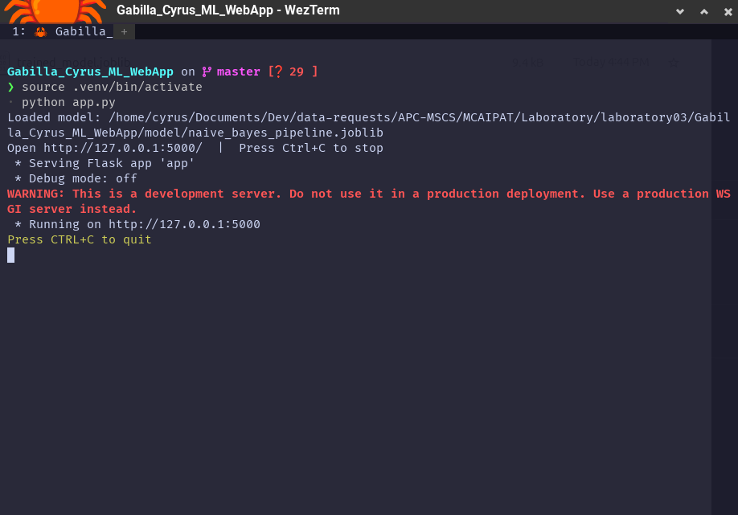
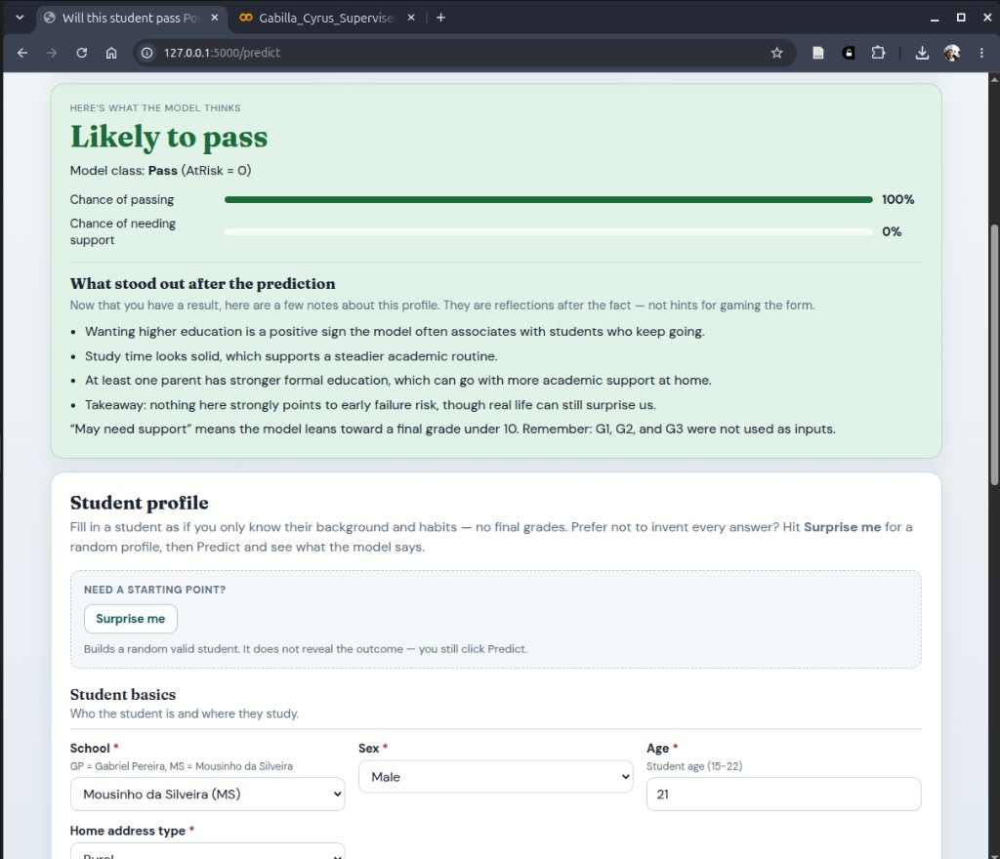
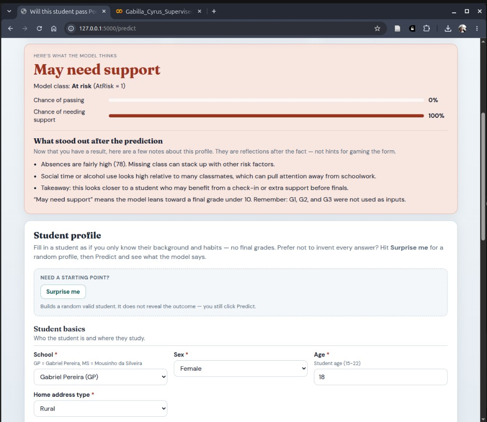
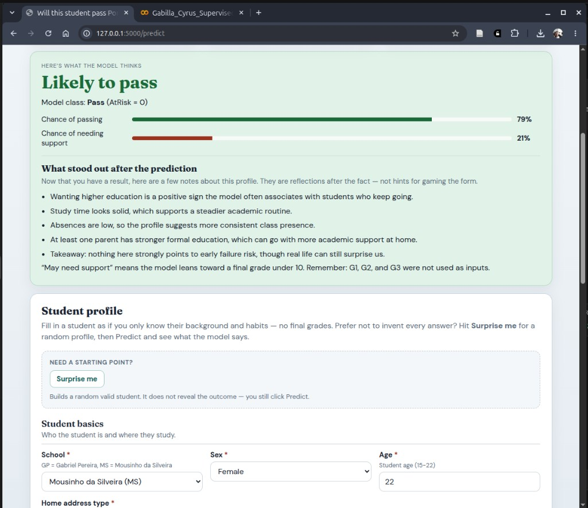
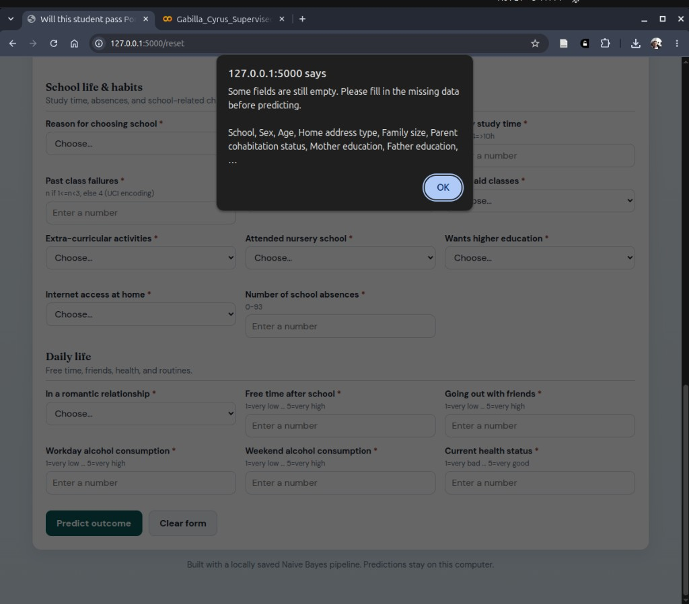

Copy the downloaded file into the project's model/ folder (as naive_bayes_pipeline.joblib).

Exporting and downloading the Naive Bayes pipeline from Google Colab.
Model file
What is a .joblib file?
A saved Python object
joblib serializes (saves) a Python object to disk. Here it stores the entire trained scikit-learn Pipeline — preprocessing + the Naive Bayes model — not just numbers.
Why the whole pipeline
Loading it with joblib.load() restores the exact object, so the web app applies the same scaling and encoding used in training.

The .joblib file inside the project's model/ folder.
PIPELINE = joblib.load(MODEL_PATH) # app.py, at startup
Think of it as a “frozen snapshot” of the trained model — portable, offline, and identical to training.
The data
UCI Student Performance (Portuguese)
30 input features
Grouped in the form as: BasicsFamily & supportSchool lifeDaily life
Target label
AtRisk = 1 if final grade G3 < 10, else 0.
G1, G2 and G3 are used only to define the label in training — never as model inputs.
Design detail
Config-driven, not hard-coded
app_config.yaml
Titles, descriptions, model paths, labels, host/port, show_probability.
features.yaml
Every field: name, label, type, choices, min/max, help text, importance.
# features.yaml (excerpt)
- name: failures
label: Past class failures
type: integer
min: 0
max: 4
importance: high
One source of truth feeds the HTML form, the client-side validation, and the server-side checks.
The interface
One clean page

Hero, about / how-to cards, and the start of the empty form.

Remaining form sections plus Predict and Clear actions.
All fields are blank by default, so the user must answer (or use Surprise me) before predicting.
Setup & run
Set up once, then run — on any OS with Python
# 1. Create the environment (once)
python3 -m venv .venv
# 2. Activate it
source .venv/bin/activate # Linux / macOS
.venv\Scripts\activate # Windows
# 3. Install dependencies
pip install -r requirements.txt
# 4. Run
python app.py
Then open http://127.0.0.1:5000/ · stop with Ctrl+C. Works on any OS with Python 3.12+.

Server running after activate + python app.py, loading the model.
Live demo
Let's run it
Activate env: source .venv/bin/activate
Start: python app.py
Open 127.0.0.1:5000
Surprise me → Predict
Try high failures & absences
Show probability bars & insights
What to highlight
Validation blocks empty / out-of-range answers
Prediction is instant and fully offline
Insights explain why a profile looks risky




Backup screenshots: pass · at risk · mixed probability · validation.
1 / 16
← → navigate · N notes · F fullscreen · P print/PDF